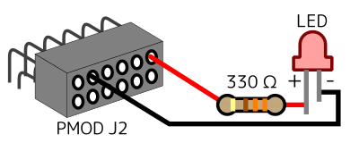
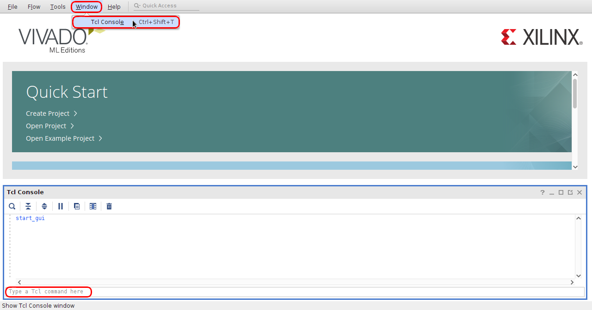
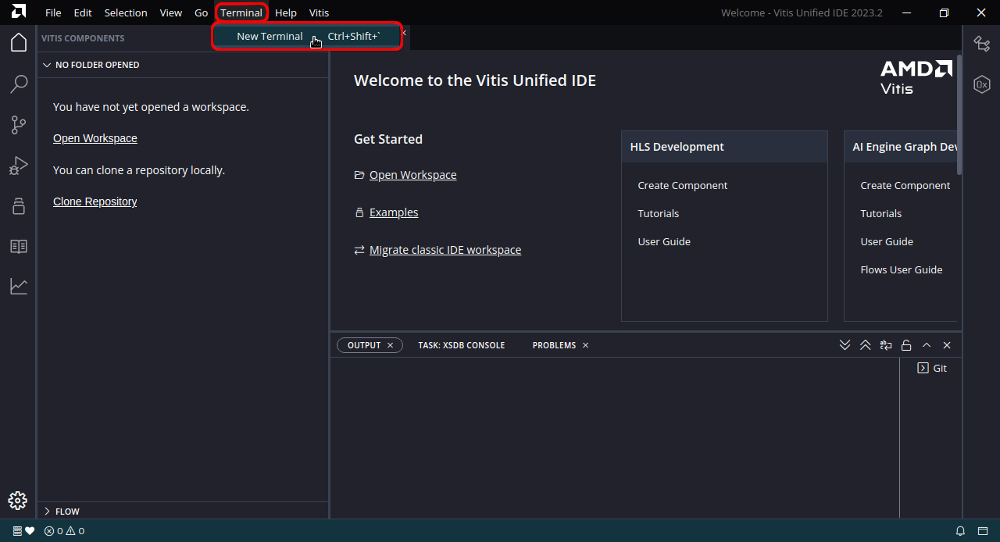

This is a script that generates a template project for starting development on AMD (Xilinx) Kria KV260, KR260. It sets up a minimal configuration for each board and implements LED blink (rtl_top.v) as an example.
Development can be started by simply coding the HDL with rtl_top.v as the top module.
The FPGA can be configured and run directly from a host PC via USB without the need for Linux or FSBL configuration since it is configured in Vitis' stand alone (bare metal) application format.
Use Vivado / Vitis Ver. 2023.2 or later for Vitis Unified IDE.
Download: Vitis_KV260_KR260_Template (License: Public Domain)
This is a project to blink the LED connected to the board.
Connect the LED and a 330Ω resistor to PMOD J2 on the board as shown below.
Extract the above file (vitis_template.tar.gz). By default, the project is configured for KV260; for KR260, replace “set board_type kv260” in vivado.tcl with “set board_type kr260”.
If you have Vivado / Vitis installed on a Linux (e.g. Ubuntu) environment on your PC, you can create and synthesize the project with just the "make" command.
In a Linux terminal,
$ source Vitis installation path/settings64.sh
(e.g. $ source /opt/Xilinx/Vitis/2024.2/settings64.sh )
$ cd [THE PATH OF THIS DIRECTORY]
$ make
Or you can do each step separately as follows.
$ make vivado
(create Vivado project)
$ make vivado-run
(Synthesis, Implement, Export HW)
$ make vitis
(create and build Vitis Unified IDE project)
Start Vitis Unified IDE,
select [THIS DIRECTORY]/vitis_workspace in "File: Set Workspace" and click "OK",
select "View: Flow",
select Project_1_app in "FLOW: Component",
then click "FLOW: Run".
In Vivado, open the "menu: Window: Tcl Console".
In Tcl Console,
pwd
(confirm current directory)
cd [THE PATH OF EXTRACTED FILE] (Vitis_KV260_KR260_Template)
(go to directory where vivado.tcl is)
source vivado.tcl
(run script to create project)
Wait a few moments and the project will be created.
source vivado-run.tcl
(Run the Synthesis, Implement, Export Hardware script)
The project will be exported to "project_1/design_1_wrapper.xsa".
In the Vitis Unified IDE, open the menu: Terminal: New Terminal.
In Terminal,
pwd
(confirm current directory)
cd [THE PATH OF EXTRACTED FILE] (Vitis_KV260_KR260_Template)
(go to directory where vitisnew.py is)
vitis -s vitisnew.py
(Execute the Vitis project generate script. Build is also executed automatically)
Click "File: Set Workspace", select "vitis_template/vitis_workspace",
Select View: FLOW,
Select "project_1_app" from "FLOW: Component",
then Click "FLOW: Run".
When only the source code of a submodule of rtl_top.v is modified, the update information may not be retrieved properly on Vivado. In this case, if you modify rtl_top.v by adding comments or other dummy modifications, Vivado will catch it and display "Refresh Changed Modules", which you can click to reload and reset the source tree.
Example: // rev. 1 (2, 3, ...)
{kind=link}
{kind=link}
{kind=link}